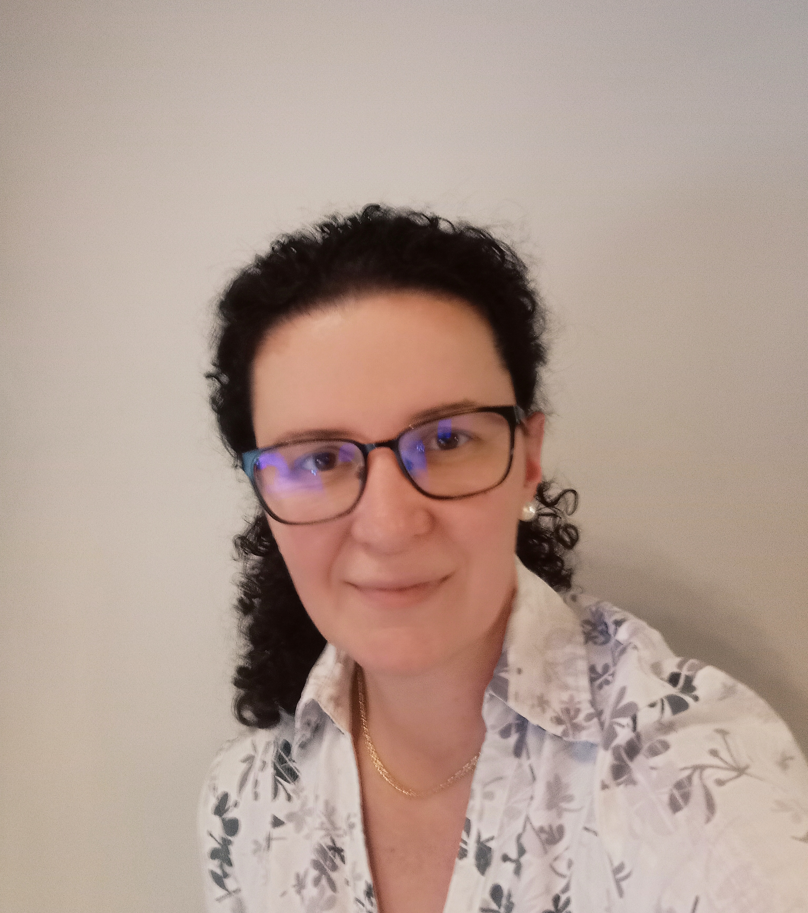
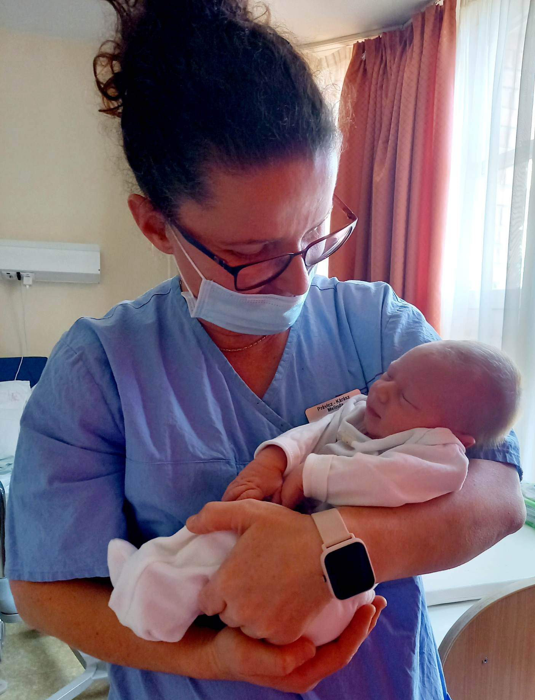
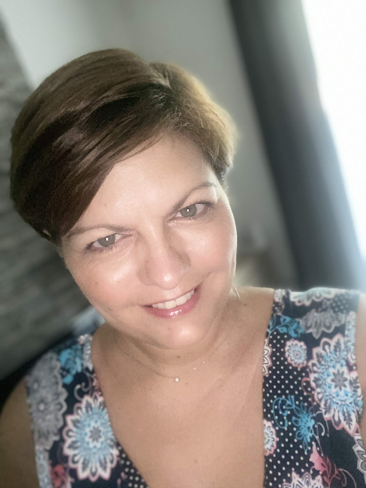

ÖTLET AZ MEGSZÜLETÉSE
A „Melindák” szülésfelkészítő célja, hogy a kismamáknak biztos támaszt nyújtsunk a várandósságuk alatt, ez az idő nyugodt, boldog, kiegyensúlyozott legyen.Amikor elérkezik életük legfontosabb napja, felkészülten, félelemtől mentesen érkezzenek a szülőszobára.
A szülésfelkészítés, várandós kismamák segítése, támogatásának ötlete, már korábban megfogalmazódott bennünk, de a jelen kialakult helyzet segített igazán ahhoz, hogy mindezeket megvalósítsuk.
20éves szülésznői tapasztalatainkat a Pécsi Tudományegyetem Klinikai Központ Szülészeti és Nőgyógyászati Klinikáján szereztük. Az adott időszak alatt folyamatos szakmai képzéseken vettünk részt. A szülőszobán eltöltött hosszú évek alatt felbecsülhetetlen szülésznői gyakorlatra tettünk szert a várandósok támogatásában és a szüléskísérésekben. Az eltöltött évek számunkra a szülésznői hivatástudat életformává vált.
Jelenleg is a klinika falai között a szülőszobán folytatjuk munkánkat, kísérjük a várandós kismamákat a jóslófájásoktól -olykor az első szívhang megjelenésétől-a gyermekágyas időszak végéig.
Munkánk során gyakran találkozunk olyan kismamákkal, akik elvesznek a rendelkezésre álló rengeteg igaz, esetleg téves információk, hiedelmek és babonák között.
Szülésfelkészítőnkön a várandós kismamáknak és a leendő édesapáknak előre egyeztetett időpontban bensőséges, meghitt környezetben, biztosítunk lehetőséget, hogy bátran tabuk és előítéletek nélkül, nyíltan tudjunk beszélni a várandósság és a szülés körüli eseményekről. Valamint, egyénre szabottan a kismama igényeihez igazodva reális válaszokat kapjanak kérdéseikre.
A találkozás során válaszokat kaphatnak többek között, hogy mire lesz szüksége a kórházi csomagban. Beszélünk a szülés megindulásának jeleiről, és körbejárjuk a szülés egyes szakaszait, a vajjúdás folyamatát, hogy mi történik a testünkben a vajjúdás alatt. Tájékozódhatnak a vajjúdási, és szülési testhelyzetekről, alternatívákról.
Információt kapnak a természetes, és mesterséges fájdalomcsillapítási lehetőségekről.
Beszélgetésünk során a kismamában kialakulhat egy kép saját szülési tervéről, melyben a várandós személye, és az ő elképzelései, gondolatai kerülnek előtérbe.
Ismereteket szereznek a császármetszésről, és a császármetszés utáni hüvelyi szülés lehetőségéről. Gátvédelemben vagy gátmetszéssel történő szülésről, a késői köldökellátás fontosságáról. A leendő édesapák megtudhatják, hogy mi a szerepük a szülőszobában, miben segíthetik a kismamát, valamint a szülőszobában zajló eseményekre is felkészítjük.
Segítséget tudunk biztosítani köldökzsinórvérből származó őssejtek levételével kapcsolatos információkról, illetve szakemberrel a kapcsolatot felvenni.
Az „aranyóra”, és a szőrkontaktus fontosságáról, és mi a szerepe az újszülött fejlődésében.
Bepillantást nyerhetnek a szülés utáni gyermekágyas időszak, szépségéről, olykor nehézségekről, és a testben lezajló változásokról. Az anyatejes táplálás fontosságáról, a tejtermelődés folyamatáról, és az igényszerinti szoptatásról. A baba-barát kórház jelentéséről.
Összefoglalva, igyekszünk reális és biztos támaszt adni a várandósság alatt. Igyekszünk ott, és abban segíteni, amiben a legnagyobb szükség van ránk.
BEMUTATKOZÁS
Právicz-Kárász Melinda
 Szülésznő vagyok. 1998-2001 között a Pécsi Szülészeti és Nőgyógyászati Klinikán töltöttem, a szülésznőképzés alatt a gyakorlatom.
Szakképesítésem megszerzése után, és azóta is ugyanitt dolgozom a szülőszoba részlegen. Az elmúlt évek alatt számtalan konferencián, és továbbképzésen vettem részt, melyek segítenek a biztonságos, és szép szülésélmények megvalósításában. Célom továbbra is, hogy új lehetőségeket, technikákat ismerjek meg, mellyel a vajjúdás és szülés folyamatát tudom segíteni, legyen az háborítatlan, tervezett, hagyományos vagy gyengéd születés. Fontos számomra a várandósok segítése, felkészítése a szülésre. A szülés kísérése, és hogy a családnak ezt a csodálatos eseményt, segítségemmel még szebbé tegyem.
Gyermekágyas osztályon töltött munkám során, a Baba-barát kórház cím megszerzése érdekében laktációs elméleti, és gyakorlati képzést, és tapasztalatot is szereztem.
2020-ban Egészségügyi Gyakorlatvezető szakképesítés megszerzését követően, a szülőszobára érkező tanulókat igyekszem pozitív élményekkel, és érzésekkel motiválni. Számukra is hangsúlyozom a segíteni akarást, és az empátia fontosságát.
Kaizer Melinda
Az elmúlt 25 évben a Pécsi Szülészeti és Nőgyógyászati Klinika szülőszobáján dolgozva szereztem meg azt a tapasztalatot melyben segíthetem az édesanyákat, hogy a szülést a legcsodálatosabb élményként éljék meg.
Az elmúlt hosszú évek alatt sokat változott a szülészeti ellátás és vele együtt változott a várandós édesanyák igénye is a családközpontú háborítatlan szülések irányába. Ezért folyamatos szakmai képzéseken vettem részt és az új ismereteket igyekeztem a szülés kisérések során alkalmazni. Melynek fontos mérföldköve volt a perinatális szaktanácsadó képzés.
Folyamatosan tartok személyre szabott és csoportos szülésfelkészítéseket, hogy ne maradjanak megválaszolatlan kérdések vagy kételyek senkiben és egy bizalmi együttműködés jöhessen létre.
Fontos számomra a természetes szülés kísérése, a biztonságot mindig szem előtt tartva. Szülésznőként az egyik legszebb és legmeghatározóbb pillanataikban segíthetem az édesanyákat, fizikai és lelki támaszként egyaránt.
Hiszem, hogy a pozitív szülés élmény mindannyiunk közös célja.